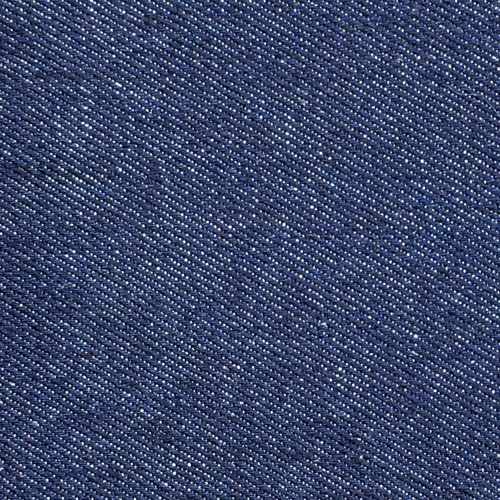
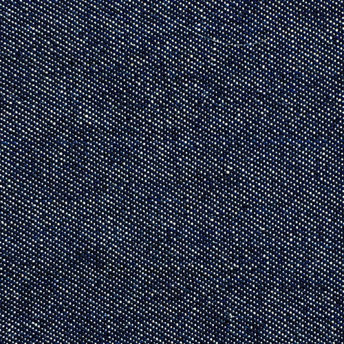
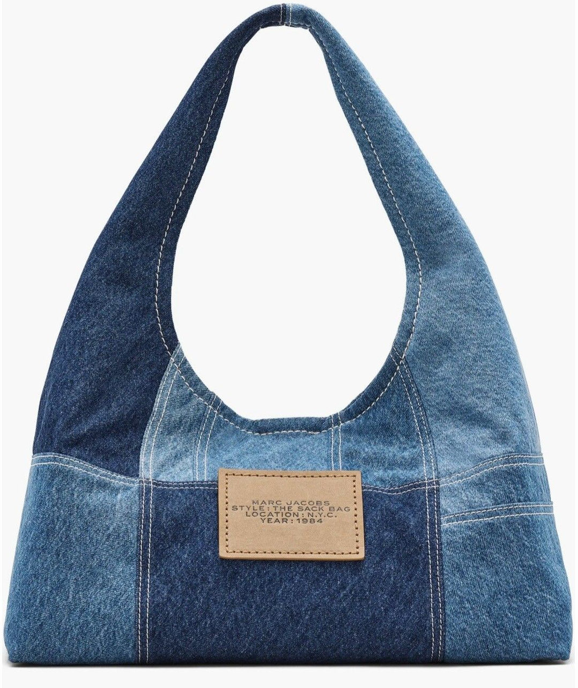

Reciclar materiais não é apenas reduzir desperdício. É permitir que a matéria continue existindo em novas formas, novas silhuetas e novas histórias.
Cada tecido reaproveitado carrega marcas do tempo, textura, memória e processo. Na construção de algo novo, nada realmente desaparece. Apenas se transforma.

Denin Classic Blue
Peso (OZ): 10oz
Construção: Sarja Quebrada
Composição: 100% Algodao
Stretch Pós-Lavado: 29%
Tingimento: Azul Intenso

Denin Classic Blue
Peso (OZ): 6oz
Construção: Sarja Quebrada
Composição: 100% Algodao
A matéria nunca desaparece. Ela apenas assume novas formas.
Biblioteca digital dedicada ao estudo de denim, construção e silhuetas
